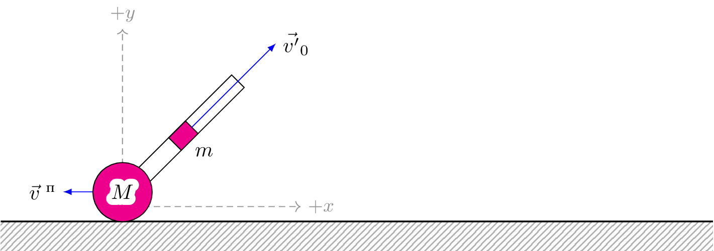

pre.tex
\documentclass[tikz]{standalone}\input{pre.tex}\begin{document}\begin{tikzpicture}
% \draw[fill=black] (-4,-2) coordinate (I) circle (1pt);
% \draw[fill=black] (0,0) coordinate (II) circle (1pt);
% \draw[fill=black] (4,-2) coordinate (III) circle (0pt);
\draw[interface] (0,0) rectangle (12,-0.5);
\draw[thick] (0,0) -- (12,-0);
\draw[axis,->] (2.05,0.25) -- ++(0,3) node[above] {$+y$};
\draw[axis,->] (2.05,0.25) -- ++(3,0) node[right] {$+x$};
\draw[force,->] (2.05,0.5) -- ++(-1,0) node[left] {$\vec{v}^\text{ п}$};
\contourlength{1mm};
\begin{scope}[rotate=-45]
\draw[] (1,1.5) rectangle ++(0.3,3);
\draw[fill=magenta] (1,3) rectangle ++ (0.3,0.4);
\draw[force,->] (1.15,3.4) -- ++(0,2) node[right] {$\vec{v'}_0$};
\node[below] at (1.45,3.4) {{$m$}};
\draw[fill=magenta] (1.1,1.8) circle (0.5cm);
\end{scope}
\node at (2.05,0.5) {\contour{white}{$M$}};
\end{tikzpicture}\end{document}